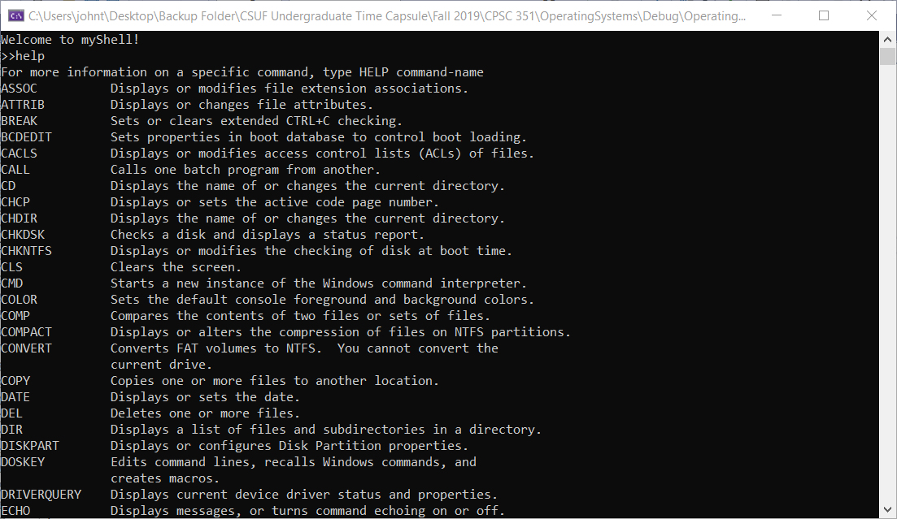
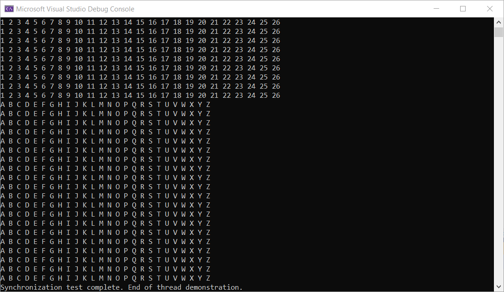

CPSC 351: Operating Systems Concepts
Resource management, memory organization, input/output, control process synchronization and other concepts as related to the objectives of multi-user operating systems.
- Start Date: August 2019
- End Date: December 2019
- Programming language(s): C++
List of skills learned:
- System Commands
- Process Management
- Threads
- Process Synchronization
- Mutex Locks and Semaphores
- Deadlocks
- Client-Server Sockets
- Security Overview
Screenshots:
2 / 3

Console Command App
3 / 3

Threads and Mutex
❮
❯
Link to repository |
Back to course list |